Aws Codecommit to Trigger Jenkins Build
前言
相信不少 Jenkins 的管理者們都曾為了讓建置的工作可以達到全自動，而在 Job 的設定中啟用過Poll SCM這個選項。
這個選項啟用後，我們就可以使用 Unix-Like 的格式設定時間讓 Job 自行運作。
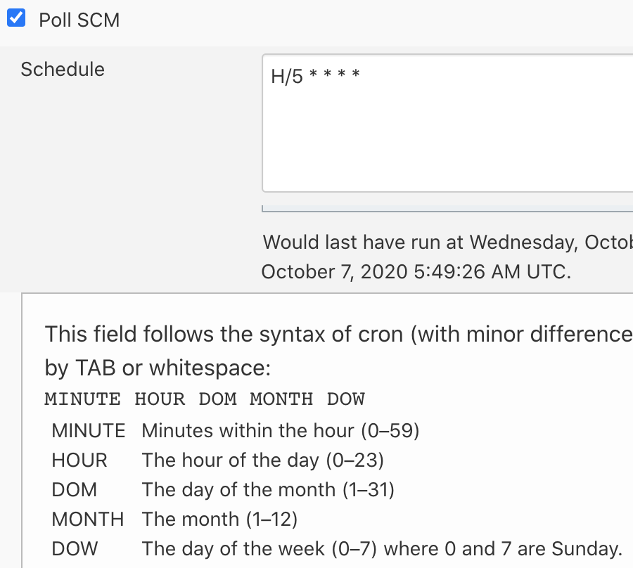
但問題來了，目前 Jenkins 最短的排程只有1分鐘，亦就是在排程的欄位裡輸入* * * * *，但這就無法達到即時性了。
有時候為了趕時間，開發人員還得進來手動觸發，這真的蠻麻煩又浪費開發者們的時間。
所以，這次的任務就是 - 讓 AWS CodeCommit 可以即時觸發 Jenkins 的 Build Job。
流程會是: 開發人員 Push 程式碼至 CodeCommit => CodeCommit 觸發通知 => SNS 發送訊息至 SQS => Jenkins 接收到 SQS 訊息後確認 CodeCommit 上有 Code Change 後觸發 Build Job，流程圖如下
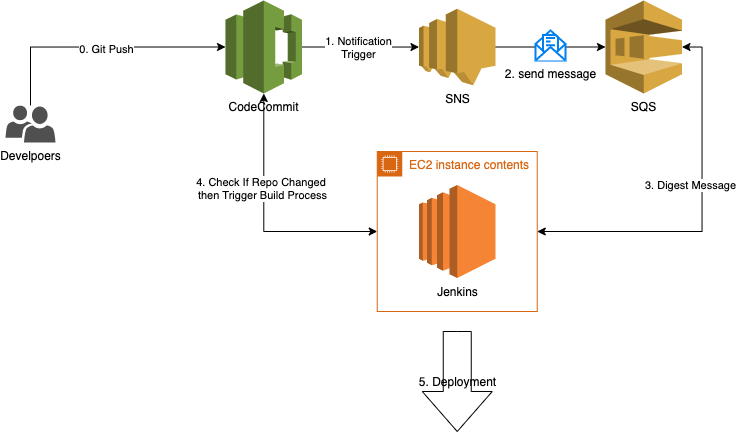
設定 AWS
首先，我們需要先建立相對應的 SNS 跟 SQS Topic，讓 CodeCommit 的 Trigger 可以應用到 SNS 的 Topic， 以及讓 SQS 可以訂閱 SNS Topic
設定 SNS
進入 SNS 後，點擊建立鈕後，輸入名稱並建立即可
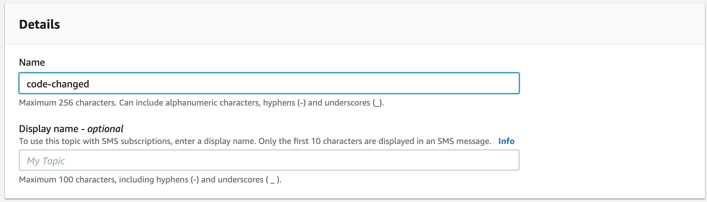
設定 SQS
進入 SQS 後，點擊建立後，選擇 Queue 型態並且輸入名稱
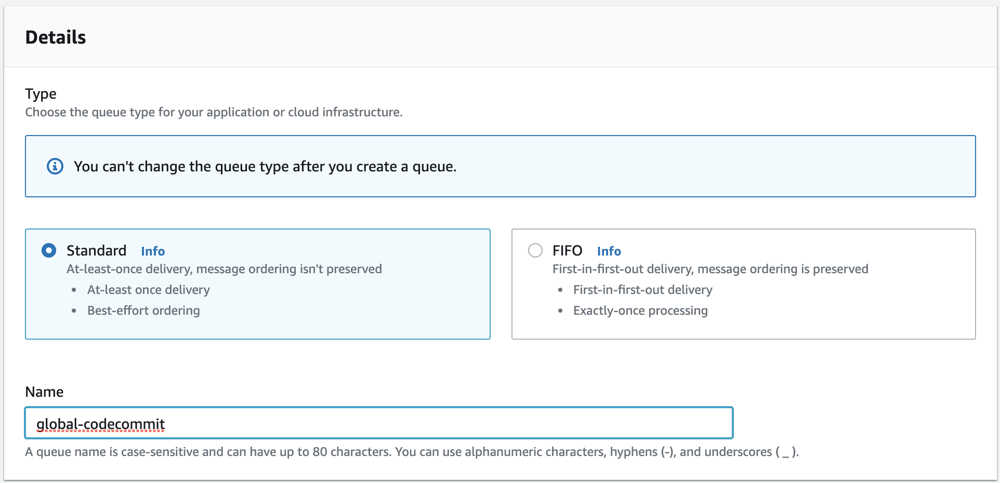
選擇剛剛建立的 SNS Topic，其他設定保留預設後點擊建立即可
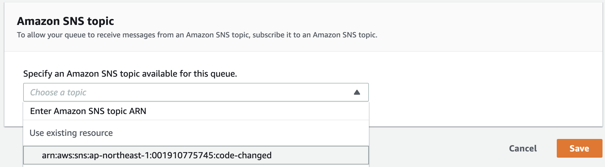
設定 CodeCommit
接下來進入 CodeCommit 點擊Create Trigger
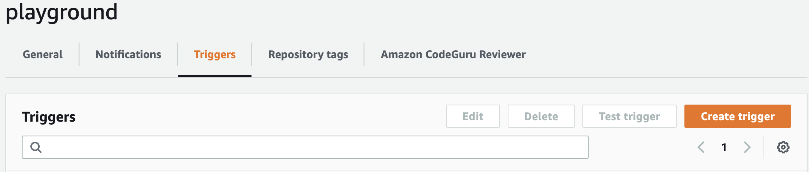
輸入必要欄位
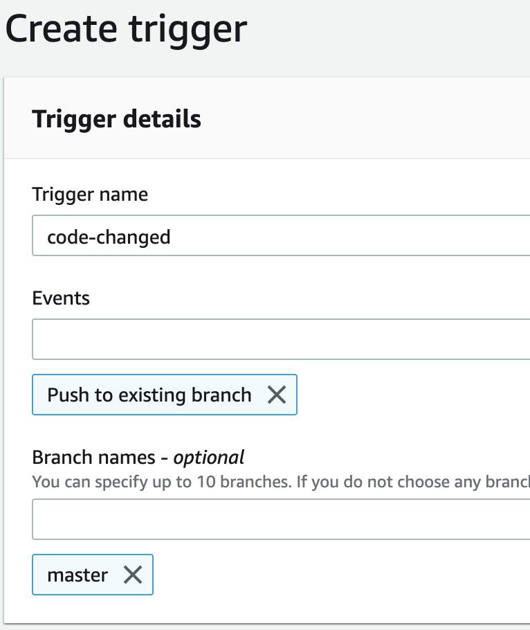
設定 Service Detail
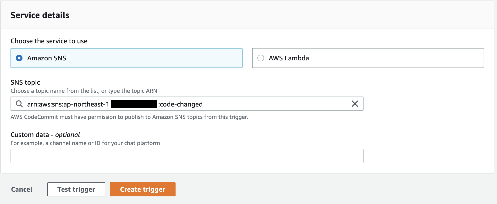
點擊測試
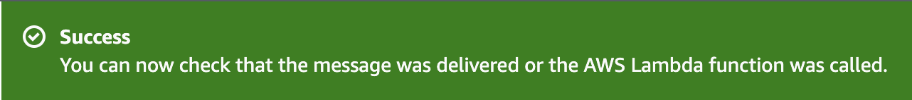
如果看到上面的圖就代表服務串成功
測試 Code Changed
這時候我們可以在本地端修改檔案再 Push 到 CodeCommit 測試整個流程是否串通。
在進行 Push 之前，我們先進去 SQS 並且點擊Send and receive message來觀察改變。
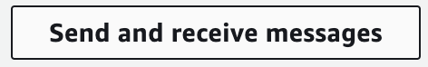
進入功能後點擊Poll for messages，這時候會 Queue 會進入接受狀態。
接著在本地端做 Push 觸發 Code Change 的事件
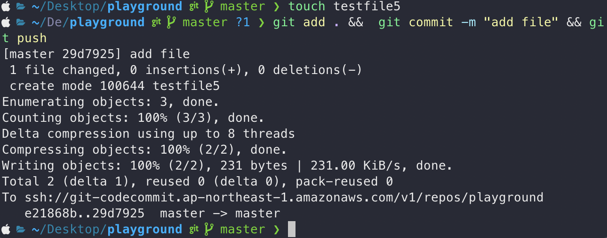
若流程有串通，就會收到如下之訊息
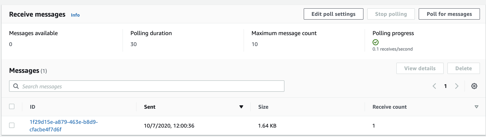
到此，AWS 的服務就完成了，接下來要進入設定 Jenkins 的階段了。
設定 Jenkins
在 Jenkins 上我們需要安裝第三方的插件、設定存取的憑證及設定專案。
安裝第三方插件
在 Jenkins 上，我們需要借助第三方插件來監聽 SQS 上面的訊息進行觸發，這裡我們用的是
AWS CodeCommit Trigger，安裝完畢後進入Configue System下拉至AWS Code Commit Trigger SQS Plugin並且完成相關設定後點擊Test。
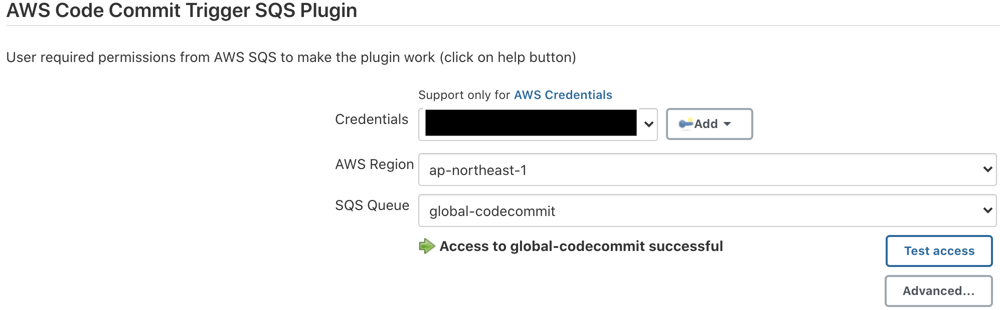
設定專案及測試
進入 Build Job 後，啟用Build when a CodeCommit repository is updated and notifies a SQS queue並且完成相關資訊的填寫，如下圖
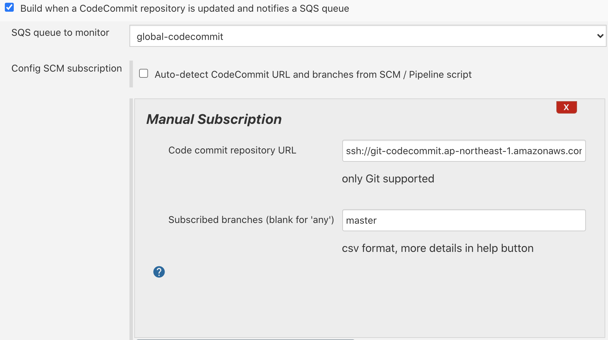
這時候可以進行測試整個完整的流程了，在進行 Code Changed 後，應該要可以看到 Job 被觸發了， 而且也可以看到 Build Job 中 SQS Activity 的活動紀錄
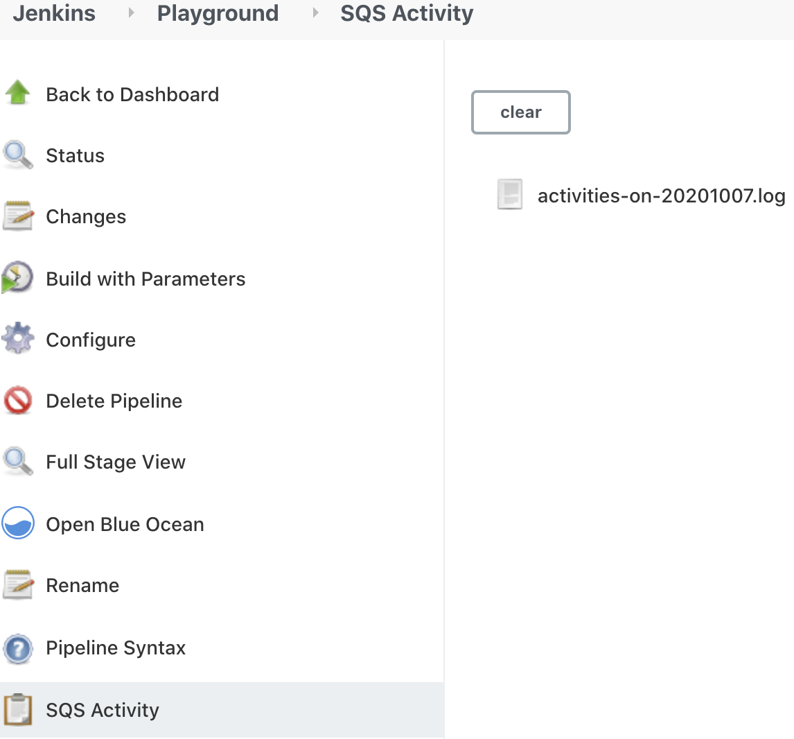
總結
這功能我在AWS Code Commit Trigger SQS Plugin v3.0.2 之前測試是失敗的，直到最近更新到 v3.0.2 後才正常的，
目前測試也都很正常，觸發也蠻快的(至少，低於 1 分鐘)。